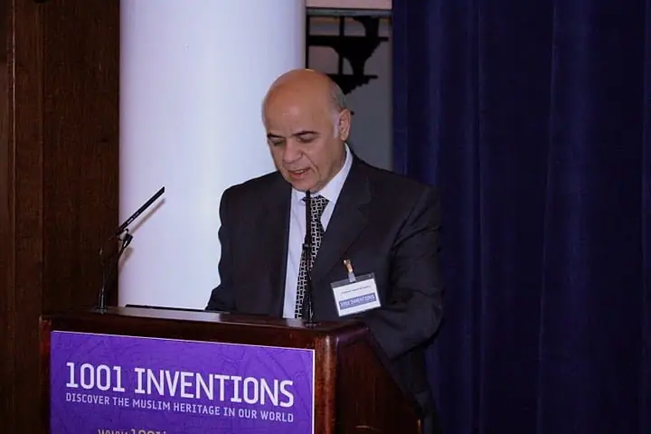

Science news ·
Status of Research in the History of Astronomy in the Arab World

Professor Hamid M. K. Al-Naimy [Proceedings of the conference 1001 Inventions: Muslim Heritage in Our World organised by FSTC, London, 25-26 May 2010]. The aim of this paper is to introduce the status of research and studies on the history of astronomy in some Arab countries, in regard to research, studies, translations and manuscript editing, including the research activities in Sharjah (UAE). The focus is laid on a proposal for establishing an International Foundation for the History of Islamic Sciences, as an independent international, non profit and legal foundation whose headquarters are suggested to be hosted at the University City of Sharjah.
Professor Hamid M. K. Al-Naimy*
1. Introduction
The aim of this paper is to introduce the status of research and studies on the history of astronomy in some Arab countries, in regard to research, studies, translations and manuscript editing, including the research activities in Sharjah (UAE). The focus is laid on a proposal for establishing an International Foundation for the History of Islamic Sciences, as an independent international, non profit and legal foundation whose headquarters are suggested to be hosted at the University City of Sharjah.
The research activities in the history of Arabic sciences, including astronomy, are currently very good in many universities and heritage research centers at many Arab countries. These activities include conferences, workshops, symposia, research, graduates studies, editing manuscripts, translations, etc.
The following paragraphs will present examples of some important current research results into the history of Arabic astronomy in several Arab countries.
2. Current Research
2.1. The Institute for the History of Arabic Science at the University of Aleppo, Syria
This institute (website: www.alepuniv.shern.net) is very active in research and graduate studies in the History of Arabic and Muslim sciences. The Institute was established in the University of Aleppo in 1976 with the main objective of discovering the Arabic and Muslim contributions in science and their impacts on human civilisation. It has an intensive graduate program and already accomplished 13 PhD theses and 27 MSc theses in history of science, while the current researches are 4 PhD and 20 MSc monographs. The institute is very active in editing scientific heritage manuscripts, translations and writing books. It has a good library which contains around 2300 copies of different manuscripts, including photograph and Xerox copies and 460 original manuscript copies. The institute has three departments: History of Basic Sciences, Medical Sciences, and Applied Sciences. The third department deals with studies, editing, and graduate programs on the Arabic and Muslim contributions and achievements in the history of sciences, and part of the research deals with the history of Arabic astronomy. Among the recent graduate projects, we mention (Shalhob 2006) :
– Jawami’ ‘ilm al-nujum wa-usul al-harakat al-samawiya by Al-Farghani (Loa’ay 2009);
– Al-mughni fi ahkam al-nujum by Ibn Hibinta (10th century).
2.2. Tunisia
In Tunisia, two major organizations deal with the history of Arabic astronomy (Alsagheer 2010):
1. The Society of the Historiographers: This institute has an interest in the astronomical manuscripts such as:
– The publication of the text of Abu Al-Hassan Kushyar ibn Labân Madkhal ila sina’at ahkam al-nujum, written in 1130 CE; it presents the principles of astronomy;
– The study of works of astronomy based on copies from the British Library, such as the Mas’udi Canon by Al-Biruni (ca 1149 CE) and three manuscript copies of Thabit ibn Qurra’s edition of Ptolemy’s Almagest (Kitab al-Majesti), one of his most famous contribution in astronomy, and his writing on the visibility of the crescent (copied in 1242 CE).
2. The Civilization Department in Tunis University: Edition of works of astronomy such as Khefiat Aflaton al-sughra, Minhag al-talib fi ta’dil al-kawakib by Ibn al-Banna al-Murrakushi, an elementary text in astronomy, the poetry of Sheikh Abdurrahman al-Khudari, and Zayjarat Ibn al-Shatir.
2.3. The Iraqi Arab Scientific Heritage Revival Centre at Baghdad University
This center made good contributions in the history of the Arab sciences, including astronomy. It has a large number of research papers, editing manuscripts, translations, graduate students thesis, etc, but unfortunately because of the unstable situation in the country, the number of researchers in this field has greatly decreased. We hope it will flourish again.
The center has four departments:
– Applied and basic sciences (partially on astronomical research);
– Medicine and pharmacy;
– Engineering and architecture;
– Arts, humanities, economics, law, philosophy and social sciences.
2.4. Morocco
A research group in the University Mohammed Vth in Rabat is working on the edition of a manuscript in astronomy from an unknown author. It is an old manuscript and it contains a description of the solar system. Among its contents: basic knowledge in astronomy, theoretical and applied, Al-awfaq for Al-Ghazali, Al-Afaq wa-‘l-awfaq, day and night timing, hisab, Al-‘usul fi al-nujum, astrology, etc.
2.5. Sultan Qabous University in Oman
Edition and analysis of manuscripts in astronomy (i.e., Kashf Al-Asrar Al-Khafia fi ‘ilm Al-Ajram Al-Samawia) and other works on navigation.
2.6. Saudi Arabia
We take the current research at King Abdul-Aziz University for Science and Technology as an example:
- Estimating a new date for the Wabar meteorite impact (Basoura 2003);
- The recorded meteors and meteor showers in Islamic history (Basoura 2004a);
- The recorded comets in Islamic history (Basoura 2004b);
- Nile flooding fluctuations and its possible connection to the long solar variability (Basoura 2005a);
- Auroral evidence for early high solar activities (Basoura 2005b);
- Records of aurora in the Islamic chronicles from the 9th to the 16th century (Basoura 2006).
2.7. United Arab Emirates, University of Sharjah
2.7.1. Department of History and Islamic Civilization:
Many research projects are currently undertaken, such as:
- Maritime Astronomy (instrumentation, tools), Ibn Majid’s contributions to maritime astronomy (Alnaimy 2008);
- Astronomical instrumentations and Observatories in the Arab World (8th century – now) (Alnaimy 2010);
- Edition of Thalathat azhar fi ma’rifat al-bihar by Ibn Majid (edited by Teyodor Shomofeky, translated by Dr Mursi, from Cairo University).
2.7.2. Dr. Sultan Al-Qassimi Centre of Gulf Studies
The centre provides researchers with integrated and comprehensive historical and geographical studies about the Arabian Gulf region as well as the developments it experienced. (For more information, click here),
2.7.3. Jumaa Almajed Centre for Culture and Heritage
Located in Dubai, the Centre provides a large quantity of manuscripts, many of which are on scientific subjects. It owns a rich library, made available to scholars. Besides providing restoration services for Arabic manuscripts in many countries, the Jumaa Almajed Centre offers research grants. (Visit the website of the Centre by clicking here).
3. The Proposal for the creation of the International Foundation for the History of Arab and Muslim Sciences (IFHAMS)
3.1. The concept
One of the resolutions of the First International Conference on the History of Arab and Muslim Sciences, which was held at Sharjah University during the period 24-27 March 2008, was to establish an International Foundation for the History of Arab & Muslim Sciences (IFHAMS). A large number of scholars who attended the conference proposed the establishment of this structure.
The IFHAMS should be an independent international, non profit and legal foundation with an independent budget, whose headquarters will be located at the University of Sharjah, UAE. It will establish branches and associations with scientific bodies throughout the world. Its board of management and board of trustees will consist of Arab, Muslim, and Orientalist scientists and scholars who are well known locally, regionally and internationally (King 2008).
The membership of IFHAMS will consist of scholars and researchers from Arab, Islamic, and international academic institutions who are interested in the history of Arabic and Muslim sciences.
3.2. Vision & Mission
Vision: The IFNAMS aspires to become a distinguished center for publicising the contributions of Arab and Muslim scholars in sciences, and their influence on contemporary science and the service of humanity.
Mission: The Foundation will be responsible of reviving, collecting, maintaining and translating Islamic scientific heritage. It also endeavors to build bridges for better communication between different cultures through conferences, colloquia, and workshops.
3.3. Objectives
- Revival of Arabic and Islamic scientific heritage, maintaining it, and introducing it locally, regionally and internationally.
- Preparation of researchers and training them in different aspects of Arab and Islamic scientific heritage.
- Sponsoring scholars interested in Arabic and Islamic scientific heritage, and supporting their work whether theoretical, practical, or technical locally, regionally, and internationally.
- Endeavour to integrate the theoretical and practical components of this heritage into modern teaching systems since it is a shared human denominator which served civilization previously, and which forms nowadays an epistemological foundation for communication and intercultural exchange.
4. Mechanisms of achieving the objectives of the IFNAMS
4.1. Revival of Arabic and Islamic heritage, maintaining it, and introducing it at local, regional, and international levels, through:
1. Coordination with universities, institutions, academic centers, libraries, and records throughout the world to facilitate access to Arabic and Islamic manuscripts;
2. Encouraging Arabic and Islamic universities to name classrooms, auditora, and halls after Arab and Muslim scientists;
3. Construction of an Internet site in many languages whose main purpose is to introduce different aspects of Arabic and Islamic heritage;
4. Production of a series of documentaries to be distributed to TV stations in order to introduce the achievements of Arab and Muslim scientists in different fields of knowledge;
5. Establishment of a specialized museum devoted to the history of Arab and Muslim sciences whose headquarters will be the city of Sharjah, where models such as instruments, tools, and manuscripts of Arab and Muslim scientists will be put on display;
6. Issuing a refereed journal in English and Arabic specializing in the history of Arab and Muslim sciences;
7. Encouraging the ministries of education and relevant institutions of higher education in Arab and Muslim countries to teach the history of Arab and Muslim sciences in different stages, and to encourage graduate students to write dissertations in this field.
4.2. Preparation of researchers and training them in different aspects of the Arabic and Islamic scientific heritage:
1. Establishing chairs for Arab and Muslim Sciences in a number of international universities in collaboration with relevant international organizations;
2. Allocating scholarships for M.A. and Ph.D. studies in some international universities to study the history of Arabic and Muslim sciences, and also to support relevant research;
3. Establishment of an award to be called “The Sharjah International Award for the History of Arab and Muslim Sciences” to be awarded to scientists and researchers from all over the world, who best highlight the achievements of Arab and Islamic civilization;
4. Establishment of a specialized library in the field of the Arabic and Islamic history of sciences.
4.3. Sponsoring scholars interested in Arabic and Islamic scientific heritage, and supporting their work, whether theoretical, practical, or technical, at local, regional, and international levels:
1. Cooperation with international organizations and relevant academic institutions to compile a multi-language lexicon of scientific terms and nomenclature which were used by Arab and Muslim scholars and which have enriched human thought;
2. Holding regional and international conferences and participating in them in order to link Arabic and Islamic scientific heritage with current scientific and technical discoveries;
3. Establishment of a special bureau of translation to serve the objectives of the Foundation;
4. Holding seminars, colloquia, and workshops.
4.4. IFHAMS departments and fields of awards will be:
1. History of pure sciences;
2. History of applied sciences;
3. History of engineering, industrial, and military sciences;
4. History of medical sciences;
5. History of human sciences;
6. History of jurisprudence sciences;
7. Translation of the best work in Arabic and Islamic sciences.
4.5. The Award and research unit
The Foundation will propose to handle all preparations related to the award: publicity, correspondence, invitations, and ceremony of delivering the award.
4.6. Research Projects Unit
Its mission will be:
1. Establishing a data base in Arabic and Muslim sciences (comprising data about the scholars, their books, original manuscripts, theses, scholars’ S&T contributions, patents, translation works, etc).
2. Sky Map: Describing the contributions of the Arab and Muslim astronomers in observations and studies of the celestial objects and phenomena;
3. Creating a talented scientists’ patronage centre.
We must note at the end of this enumeration of the IFNAMS’ program, vision, objectives and organisation that the Foundation’s project is still a proposal under study; it will be submitted to the Sharjah Higher authorities for approval.
5. References
- Al-Naimiy, H. M. K., “Astronomical Instrumentations Invented by the Muslims Scholars and Used in the Gulf Maritime History”, lecture at The Gulf Maritime Through Ages Conference, organised by Dr. Sultan Al Qassimi Centre of Gulf Studies, in cooperation with the Department of History and Islamic Civilization in the College of Arts, Humanities and Sciences at University of Sharjah, 17-19/November/2008. (click here for more information about this conference).
- Al-Naimiy, H. M. K., “The Arab and Muslim History of the Astronomical Instrumentations and Observatories (from the 8th to the 21st century)”, The Third Annual Conference on Islamic History, (Uniformity and Diversity in Islamic Civilization), Sharjah University April 2010 (click here for more information about this conference).
- Alsagheer, Nouraldeen, private communication on the history of astronomy in the Arab World, University of Sharjah, 2010.
- Basoura, Hassen, Meteoritic and Planetary Science Journal, 38, 2003.
- Basoura, Hassen, JKAU: Sci., 2004, 16, 3-17.
- Basoura, Hassen, JKAU: Sci., 2004, 16, 19-32.
- Basoura, Hassen, J. of Arab Association Universities for Basic and Applied Sciences, 2005, 1, 19-25.
- Basoura, Hassen, Solar Physics Journal, 2005, 225, 209-212.
- Basoura, Hassen, Journal of Atmospheric and Solar-Terrestrial Physics, 2006, 68, 937-941.
- King, David A., private communication on IFHAMS, Sharhaj, March 2008.
- Loa’ay Mohammed, Jawami’ ‘ilm al-nujum wa-usul al-harakat al-samawiya li-al-Farghani, PhD thesis, University of Aleppo, December 2009.
- Shalhob, Sami, A lecture delivered at Aleppo University on the occasion of the activities organised to celebrate “Aleppo as Capital of Islamic Culture “, Institute for the History of Arabic Science at the University of Aleppo, 2006.
* Dean of the College of Sciences, University of Sharjah, UAE President of the Arab Union for Astronomy and Space Sciences
Migrated from the AUASS website archive as published, with the formatting tidied.